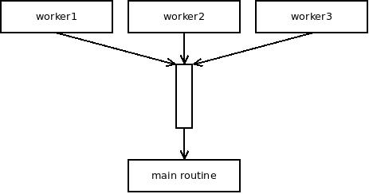
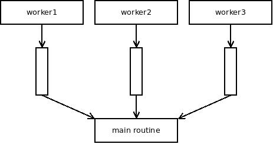
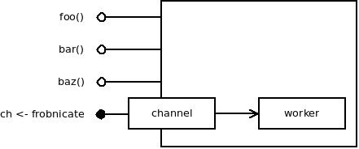
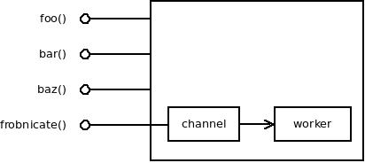

I believe that "select considered harmful" article is best piece of writing about software design I have ever done. However, I feel it's kind of hard to grasp.
On one hand, the idea looks suspiciously simple, like something one could have thought of over breakfast and then spent 15 minutes writing it down. In other words, something not worth of paying too much attention to. Whereas, in fact, it's the culmination of a decade of implementing and thinking about distributed systems.
On the other hand, lot of people haven't yet fully internalised Go's model of lightweight processes communicating via channels. Inviting them to go one step further and imagine a world where all the inter-process flow control is done via channels, without a need for the crutch that is select statement, is maybe asking for too much, too early.
Finally, I've tried to keep the essay as succinct and simple as possible. I've deliberately omitted all the comments and footnotes that may have otherwise helped with intuitive understanding of the issue.
Let me thus write down a couple of footnotes that may help with understanding the thinking behind the essay.
At certain level of the system stack we kind of expect not to do scheduling by hand. This may not be the case for assembly language and sometimes not even for C (it's a system language after all) but everywhere above that level the problem of scheduling should be transparently solved either by the operating system or by the language runtime.
Except that it's often not. The most visible case is writing networks servers in C where launching a process/thread per TCP connection is too expensive to be an option and programmer thus has to do all the switching between contexts of different TCP connections by hand.
However, the phenomenon it much more common. You may not have though of it that way, but every time you were doing shared-state concurrency (mutexes, semaphores et c.) you were actually writing an implicit scheduler meant to coordinate all the threads in your program.
Every time you have written an event loop you were facing the same problem: It was really a simple scheduler, wasn't it?
All of these things cause huge amount of pain. And I am not speaking of minor inconveniences here. What I mean is that every single programmer must have wasted significant portion of their working life, oftentimes entire man-years, implementing 100 different variations of do-it-yourself scheduling. Plus debugging it when the scheduler — as one would expect — went awry.
I am a big fan of Go language (although I haven't used it much) because, unlike many other languages, it actually tries hard to solve this grave problem. Goroutines are lightweight enough to be used every time a simple asynchronous task has to be done. Yay! No more hand-crafted scheduling between concurrent TCP connections! Channels, on the other hand, make it possible to do without mutexes, condition variables, semaphores and such. Farewell, scheduling access to the shared state! I won't miss you.
All that being said, select{} statement seems to be focused on providing manual scheduling capabilities to the user.
Let me explain.
Imagine the case where you have multiple worker goroutines, all sending messages to the main routine. They can do so via a single channel. To make the point more obvious, let's make the channel unbuffered:

When happens when main routine reads a message from the channel? What looks like a pretty standard I/O operation is in fact translated by the language runtime into a scheduling decision: The channel picks one of the ready worker goroutines and unblocks it. Nice. The scheduling is almost invisible to the user.
Let's consider a different way of implementing the same thing though. Let us have one channel per worker goroutine. Main goroutine will then select{} on those channels to get the messages. In theory, it works the same as the original one channel design. Channels use simple probabilistic scheduler. So does select. The behaviour should therefore be identical:

The difference though is that in the latter case the user is free to manipulate the set of channels to wait for manually and can thus plug into the system scheduler. For example, they can select{} on high-priority channels first and only if no message is available fall back to selecting on all channels, including low-priority ones.
In short, if we use channel, scheduling is done by the system. If we use select{} scheduling may (or may not!) be done by the user.
Having the statement in the language actually makes sense for the same reason it makes sense to have goto in C: At the end of the day, there will still be a small contingent of programmers who do want to do scheduling by hand.
But be aware! Having the statement in the language doesn't mean it's a necessarily good idea to use it. Think of the goto!
A final question is somewhat tangential but interesting nonetheless: Given that Go is supposed to do scheduling for the user, are the scheduling algorithms versatile enough to satisfy all the users?
The answer is almost certainly negative. There are no goroutine priorities, nor prioritised channels. There are no fancy real-time schedulers. Nothing of the sort. However, the scheduling that is available out of the box is sufficient in 99% of cases. If you are unlucky enough to need something more sophisticated, here's your select statement. Go and use it.
In the original essay I've asserted that using select statement leads to ugly code. While that may sound controversial, rephrasing it as "scheduling by hand makes the code ugly" is unlikely to be challenged by anyone.
However, there are aspects of the problem that are not directly related to scheduling but still contribute to the ugliness of the code.
Imagine an object. It has some functions, some properties and so on. It also contains a running goroutine. The goroutine does useful work based on commands sent to it via a channel. We would like to hide the implementation of the object behing a nice API and so we create some new functions to steer the goroutine. For example, forbnicate() function will create a 'frobnicate' command and send it to the channel. Nice, isn't it?
Except that it doesn't play well with select{}. If the user is doing their own scheduling, they may want to try to frobnicate three different instances of the object in parallel like this:
for {
select {
case channelToInstance1 <- frobnicate:
case channelToInstance2 <- frobnicate:
case channelToInstance3 <- frobnicate:
}
}
No such thing is possible using frobnicate() function. If all you have is the function you can frobnicate at most one instance at a time. No luck.
What that means is that if select{} is expected to be used, we won't have nice object APIs. The channels will dangle out of the open gut of the object making attempts to hide internals of the object behind nice function-based API futile. Object will expose both channels and functions. Each will have its own parameter syntax, its own invocation syntax and so on. Unlike functions, channels don't even allow to specify output parameters. It's ugly:

However, if we get rid of select, the encapsulation suddenly starts working. Sending a message to channel can be hidden inside a function. If there's a reply, the sequence of sending a request through one channel and getting a reply through a different one can be hidden inside a function.

There's certainly more to be said in favour of select-free programming, but these two footnotes should give you at least a starting point for thinking about the problem.
February 23rd, 2016